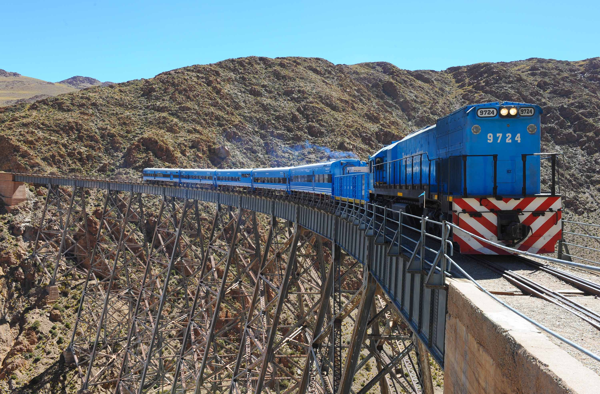
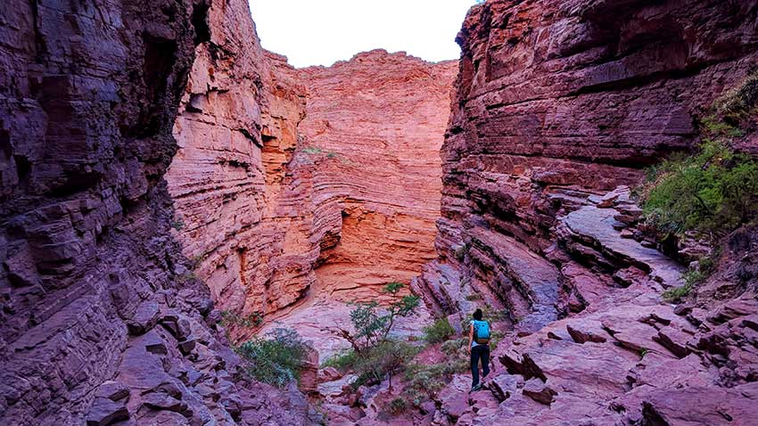

En el norte de Argentina, se caracteriza por su gran diversidad de paisajes naturales, que incluyen montañas, quebradas, valles y formaciones geológicas únicas.
Entre los paisajes más destacados se encuentran el cerro de los 7 colores, el destacado Tren de las nubes y la Garganta del Diablo que muestran la riqueza geológica de la región.
Estos paisajes atraen turistas de todo el mundo, siendo un factor clave para el desarrollo económico de la provincia. Además, representan un patrimonio natural y cultural de gran valor.